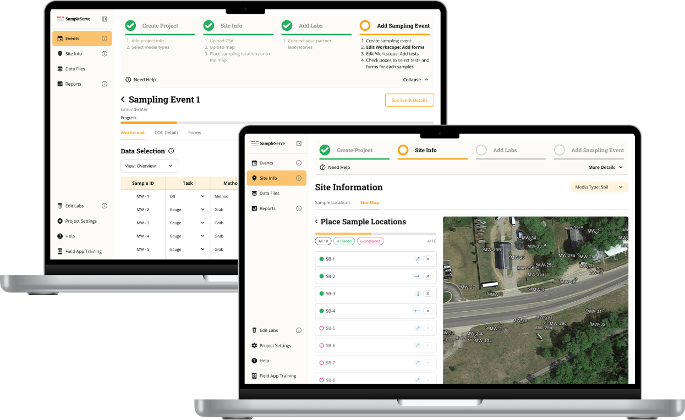
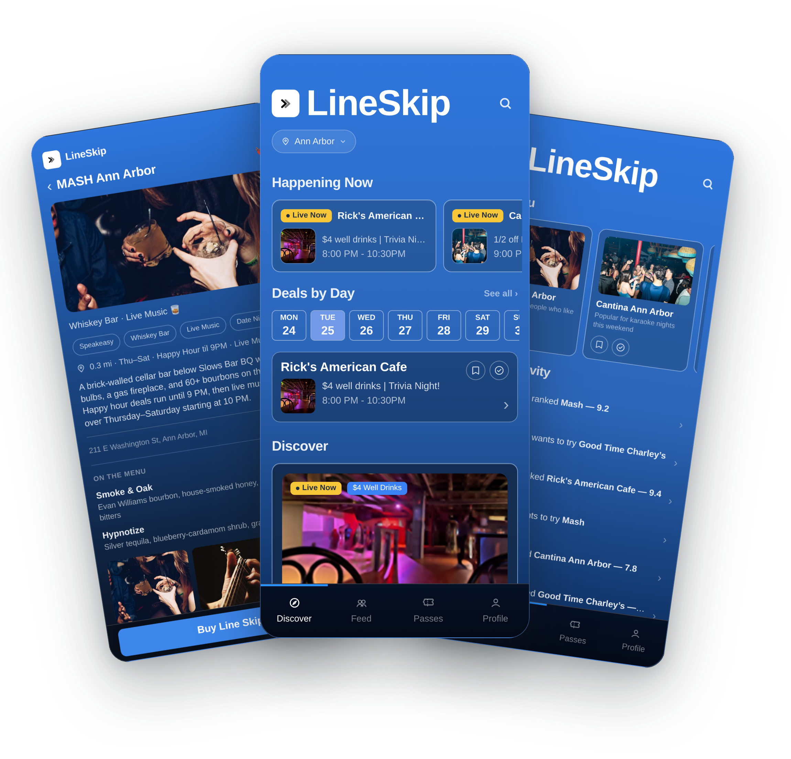
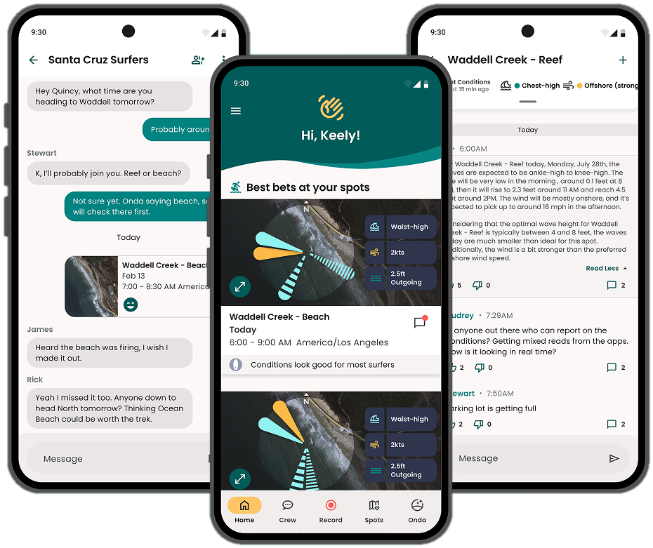
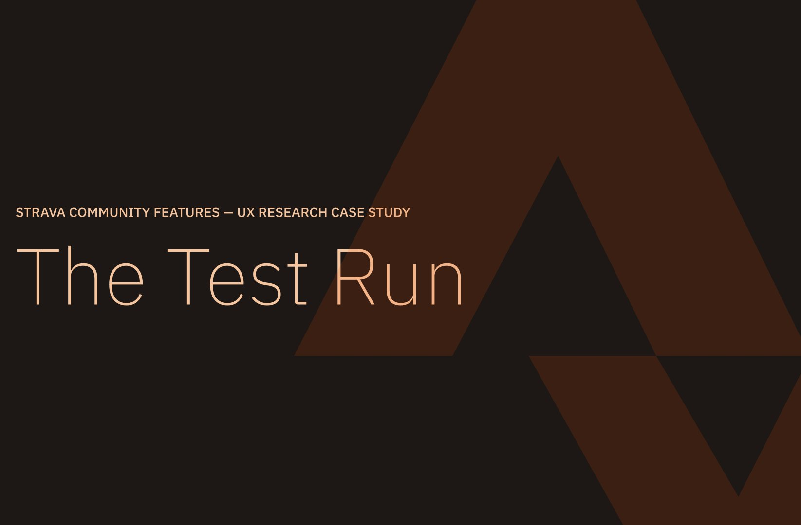

Environmental sampling & compliance reporting platform
UX DesignUsability TestingOnboarding Design

Nightlife planning app prototype
Mobile DesignAI PrototypingBrand Design
Figma · Claude · Claude Code · Vercel

AI-powered surf forecasting app
0 to 1 DesignMVP ScopingPrototyping

UX ResearchProduct StrategyQualitative Research